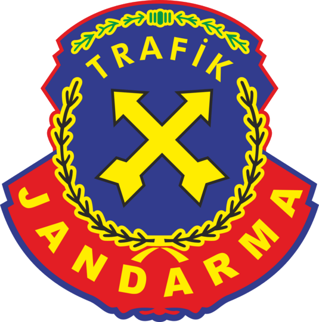

<!DOCTYPE html>
<html lang="tr">
<head>
<meta charset="utf-8">
<meta name="viewport" content="width=device-width, initial-scale=1, viewport-fit=cover">
<meta name="theme-color" content="#FFF8E7" media="(prefers-color-scheme: light)">
<meta name="theme-color" content="#171A1F" media="(prefers-color-scheme: dark)">
<link rel="icon" href="data:image/svg+xml,%3Csvg xmlns='http://www.w3.org/2000/svg' viewBox='0 0 100 100'%3E%3Ctext y='.9em' font-size='90'%3E🚦%3C/text%3E%3C/svg%3E">
<title>Trafik Kahramanları</title>
<link rel="preconnect" href="https://fonts.googleapis.com">
<link rel="preconnect" href="https://fonts.gstatic.com" crossorigin>
<link rel="stylesheet" href="https://fonts.googleapis.com/css2?family=Baloo+2:wght@600;800&family=Nunito:wght@500;700;800&display=swap">
<style>
/* Layout: tek sütunlu mobil uygulama kabuğu, altta sekme çubuğu, ortada en fazla 640px içerik */
:root{
  --bg:#FFF8E7; --surface:#FFFFFF; --ink:#2B2F33; --muted:#66707A; --line:#EADFC2;
  --primary:#2E86DE; --primary-ink:#FFFFFF; --good:#2ECC71; --good-bg:#DDF6E8;
  --bad:#E74C3C; --bad-bg:#FBE0DC; --warn:#F39C12; --note-bg:#FFF0B8; --note-line:#F2C94C;
  --lamp-off:#5A5F66; --housing:#2B2F33;
  --display:'Baloo 2','Trebuchet MS',system-ui,sans-serif; --body:'Nunito',system-ui,-apple-system,'Segoe UI',sans-serif;
}
@media (prefers-color-scheme: dark){:root:not([data-theme="light"]){
  --bg:#171A1F; --surface:#222730; --ink:#F2F4F6; --muted:#A6AEB8; --line:#343B46;
  --primary:#5AA5F0; --primary-ink:#0E1620; --good:#3DD982; --good-bg:#17382A;
  --bad:#FF6B5C; --bad-bg:#40201D; --warn:#F5A83A; --note-bg:#3A3217; --note-line:#8A7425;
  --lamp-off:#4A5058; --housing:#0F1215; color-scheme:dark;}}
:root[data-theme="dark"]{
  --bg:#171A1F; --surface:#222730; --ink:#F2F4F6; --muted:#A6AEB8; --line:#343B46;
  --primary:#5AA5F0; --primary-ink:#0E1620; --good:#3DD982; --good-bg:#17382A;
  --bad:#FF6B5C; --bad-bg:#40201D; --warn:#F5A83A; --note-bg:#3A3217; --note-line:#8A7425;
  --lamp-off:#4A5058; --housing:#0F1215; color-scheme:dark;}

*{box-sizing:border-box}
html,body{min-height:100%}
body{margin:0;background:var(--bg);color:var(--ink);font-family:var(--body);font-size:17px;line-height:1.45;
  padding-inline:16px;padding-block:20px 104px}
.wrap{max-width:640px;margin-inline:auto}
h1,h2,h3{font-family:var(--display);line-height:1.1;margin:0;text-wrap:balance}
h1{font-size:2.1rem;font-weight:800}
h2{font-size:1.7rem;font-weight:800;margin-bottom:14px}
p{margin:0}
button{font:inherit;color:inherit;cursor:pointer}
:focus-visible{outline:3px solid var(--primary);outline-offset:2px}

.hero{display:flex;gap:16px;align-items:center;justify-content:space-between;margin-bottom:20px}
.hero p{color:var(--muted);margin-top:6px}
.light{background:var(--housing);border-radius:22px;padding:10px 12px;display:flex;flex-direction:column;gap:8px;flex:none}
.lamp{width:34px;height:34px;border-radius:50%;background:var(--lamp-off);opacity:.45;transition:opacity .3s,background .3s}
.lamp.on.r{background:#E74C3C;opacity:1;box-shadow:0 0 14px #E74C3C99}
.lamp.on.y{background:#F9CA24;opacity:1;box-shadow:0 0 14px #F9CA2499}
.lamp.on.g{background:#2ECC71;opacity:1;box-shadow:0 0 14px #2ECC7199}

.label{font-size:.8rem;font-weight:800;letter-spacing:.06em;text-transform:uppercase;color:var(--muted);margin-bottom:8px}
.chips{display:flex;gap:10px;flex-wrap:wrap;margin-bottom:18px}
.chip{border:2px solid var(--primary);background:var(--surface);color:var(--primary);border-radius:999px;padding:9px 18px;font-weight:800}
.chip[aria-pressed="true"]{background:var(--primary);color:var(--primary-ink)}

.card{background:var(--surface);border:2px solid var(--line);border-radius:20px;padding:16px;margin-bottom:12px}
.card.note{background:var(--note-bg);border-color:var(--note-line)}
.card h3{font-size:1.2rem;margin-bottom:6px}
.muted{color:var(--muted)}
.bar{height:12px;border-radius:6px;background:var(--line);overflow:hidden;margin:10px 0}
.bar>i{display:block;height:100%;background:var(--good);transition:width .4s}

.btn{display:block;width:100%;border:0;border-radius:16px;padding:14px 18px;font-weight:800;font-size:1.05rem;
  background:var(--primary);color:var(--primary-ink);margin-bottom:10px;text-align:center}
.btn.good{background:var(--good);color:#0B2A18}
.btn.warn{background:var(--warn);color:#2A1A00}
.btn:active{transform:translateY(1px)}

.lesson{display:flex;gap:14px;align-items:center;width:100%;text-align:left;background:var(--surface);
  border:2px solid var(--line);border-radius:20px;padding:14px;margin-bottom:12px}
.lesson .ico{width:58px;height:58px;border-radius:16px;display:grid;place-items:center;font-size:30px;flex:none}
.lesson .tx{min-width:0;flex:1}
.lesson b{font-family:var(--display);font-size:1.15rem;display:block}
.lesson span.s{color:var(--muted);font-size:.92rem}
.back{background:none;border:0;color:var(--primary);font-weight:800;padding:4px 0;margin-bottom:10px}
.lhead{border-radius:24px;padding:22px 16px;text-align:center;margin-bottom:14px;color:#1B1B1B}
.lhead .big{font-size:60px;line-height:1}
.lhead h2{margin:8px 0 0}
.pts{margin:0;padding:0;list-style:none;display:grid;gap:10px}
.rule b{display:block;font-size:.8rem;letter-spacing:.06em;text-transform:uppercase;color:var(--warn)}
.rule p{font-family:var(--display);font-weight:800;font-size:1.3rem;margin-top:4px;line-height:1.2}

.qmeta{font-weight:800;color:var(--muted);margin-bottom:10px}
.q{font-family:var(--display);font-weight:800;font-size:1.35rem;line-height:1.2}
.opt{display:block;width:100%;text-align:left;background:var(--surface);border:2px solid var(--line);
  border-radius:16px;padding:15px;margin-bottom:10px;font-weight:700}
.opt.ok{background:var(--good-bg);border-color:var(--good)}
.opt.no{background:var(--bad-bg);border-color:var(--bad)}
.result{text-align:center;padding-top:10px}
.result .trophy{font-size:64px}

.habit{display:flex;gap:12px;align-items:center;width:100%;text-align:left;background:var(--surface);
  border:2px solid var(--line);border-radius:16px;padding:14px;margin-bottom:8px;font-weight:700}
.habit.on{background:var(--good-bg);border-color:var(--good)}
.habit .box{width:26px;height:26px;border-radius:8px;border:2px solid var(--muted);display:grid;place-items:center;flex:none;font-size:16px}
.habit.on .box{background:var(--good);border-color:var(--good);color:#0B2A18}
.sum{text-align:center;font-weight:800;color:var(--primary);margin-top:12px}

.sigs{display:flex;gap:10px;align-items:stretch;flex:none}
.amblem{width:96px;display:grid;place-items:center;flex:none}
.amblem svg,.amblem img{display:block;width:100%;height:auto;max-height:134px;object-fit:contain;filter:drop-shadow(0 2px 4px #0003)}
.amblem text{font-family:var(--display);font-weight:800;fill:#fff}
.gl{font-size:96px;line-height:1.2;margin:8px 0}
.scene{font-size:44px;text-align:center;letter-spacing:6px;background:var(--note-bg);border-radius:20px;padding:16px 10px;margin-bottom:12px}
nav{position:fixed;left:0;right:0;bottom:0;background:var(--surface);border-top:2px solid var(--line);
  padding:6px 8px calc(6px + env(safe-area-inset-bottom,0px))}
nav .in{max-width:640px;margin-inline:auto;display:grid;grid-template-columns:repeat(5,1fr);gap:4px}
nav button{background:none;border:0;border-radius:14px;padding:6px 2px;display:grid;justify-items:center;gap:2px;
  font-size:.74rem;font-weight:800;color:var(--muted)}
nav button .e{font-size:22px;opacity:.55}
nav button[aria-current="page"]{color:var(--primary)}
nav button[aria-current="page"] .e{opacity:1}
@media (prefers-reduced-motion:reduce){*{transition:none!important}}
</style>

</head>
<body>
<div class="wrap" id="view"></div>
<nav><div class="in" id="tabs"></div></nav>

<script>
const DATA = {"lessons":[{"id":"isik","emoji":"🚦","title":"Trafik Işıkları","color":"#E74C3C","levels":["ilkokul","ortaokul"],"summary":"Renklerin ne dediğini öğren.","points":["🔴 Kırmızı: Dur! Kaldırımda bekle.","🟡 Sarı: Hazırlan, henüz geçme.","🟢 Yeşil: Yaya ışığı yeşilse sağa sola bakıp geç.","Yeşili görsen bile araçların durduğundan emin ol."],"goldenRule":"Işık yeşil olsa bile önce sola, sonra sağa, sonra yine sola bak!"},{"id":"yaya","emoji":"🦓","title":"Yaya Geçidi","color":"#2E86DE","levels":["ilkokul","ortaokul"],"summary":"Karşıdan karşıya güvenle geçmenin yolu.","points":["Sadece yaya geçidinden ve alt/üst geçitlerden geç.","Kaldırımın kenarında dur, koşarak geçme.","Sürücüyle göz göze gel, durduğunu doğrula.","Park etmiş bir aracın arkasından aniden çıkma."],"goldenRule":"Dur, bak, dinle, sonra yürü."},{"id":"kemer","emoji":"🚗","title":"Emniyet Kemeri","color":"#2ECC71","levels":["ilkokul","ortaokul"],"summary":"Araçta en önemli alışkanlık.","points":["Araca biner binmez kemerini tak. Kısa yolda bile!","Çocuklar arka koltukta oturmalı.","Küçük çocuklar için çocuk koltuğu şarttır.","Kemer, kaza anında seni koltuğa bağlı tutar."],"goldenRule":"Araç hareket etmeden önce klik sesi duy!"},{"id":"kask","emoji":"🚲","title":"Bisiklet ve Scooter","color":"#F39C12","levels":["ilkokul","ortaokul"],"summary":"Tekerlekli oyuncakların güvenlik kuralları.","points":["Kask, dizlik ve dirseklik tak.","Yolda değil park, bahçe gibi güvenli alanlarda sür.","Akşamları reflektör ve ışık kullan.","Sürerken kulaklık takma, telefona bakma."],"goldenRule":"Kasksız pedal çevirme!"},{"id":"isaret","emoji":"🛑","title":"Trafik İşaretleri","color":"#8E6BD8","levels":["ilkokul","ortaokul"],"summary":"Şekillerden ve renklerden anlam çıkar.","points":["🔺 Üçgen levhalar: Dikkat, tehlike var!","⭕ Kırmızı çerçeveli yuvarlak: Yasak veya sınırlama.","🔵 Mavi yuvarlak: Mecburi yön ya da zorunluluk.","🟦 Mavi dikdörtgen: Bilgi verir (park, hastane...)."],"goldenRule":"Şekil ve renk sana ne yapacağını söyler."},{"id":"servis","emoji":"🚌","title":"Okul Servisi ve Otobüs","color":"#F9CA24","levels":["ilkokul","ortaokul"],"summary":"İnerken ve binerken dikkat edilecekler.","points":["Araç tamamen durmadan ayağa kalkma.","İndikten sonra aracın önünden değil, uzaktan geç.","Araç uzaklaşınca, güvenli şekilde karşıya geç.","Servis kapısında itişip kakışma."],"goldenRule":"Araç gidene kadar bekle, sonra geç."},{"id":"telefon","emoji":"📱","title":"Yürürken Dikkat","color":"#2E86DE","levels":["ortaokul"],"summary":"Telefon ve kulaklık seni görünmez yapar.","points":["Karşıya geçerken telefona bakma.","Kulaklıkla araç sesini duyamazsın.","Arkadaşınla konuşurken de yola dikkat et.","Yolu geçerken telefonu cebine koy."],"goldenRule":"Yolda gözün yolda, kulağın sokakta olsun."},{"id":"sorumluluk","emoji":"🧑‍🤝‍🧑","title":"Trafikte Sorumluluk","color":"#2ECC71","levels":["ortaokul"],"summary":"Sen de bir trafik kahramanısın.","points":["Kuralları ailene ve arkadaşlarına hatırlat.","Kurala uymayan birini görürsen nazikçe uyar.","Acil durumda 112 numarasını ara.","Küçüklere iyi örnek ol."],"goldenRule":"Kurala uyan, başkasına örnek olur."}],"questions":[{"id":"q1","level":"hepsi","text":"Yaya ışığı kırmızı yanıyor. Ne yapmalısın?","options":["Hızlıca geçerim","Kaldırımda beklerim","Arkadaşımı beklerim ve geçerim"],"answer":1,"explanation":"Kırmızı ışık \"dur\" demektir. Yeşil yanana kadar kaldırımda beklenir."},{"id":"q2","level":"hepsi","text":"Karşıdan karşıya nereden geçmeliyiz?","options":["Park etmiş araçların arasından","Yaya geçidinden","Yolun en rahat yerinden"],"answer":1,"explanation":"Yaya geçidi, sürücülerin yayaları beklediği güvenli yerdir."},{"id":"q3","level":"hepsi","text":"Araca bindiğinde ilk ne yaparsın?","options":["Cama bakarım","Emniyet kemerimi takarım","Müzik açarım"],"answer":1,"explanation":"Kısa yolda bile kemer takılmalıdır. Kaza her yerde olabilir."},{"id":"q4","level":"hepsi","text":"Bisiklete binerken hangisi şarttır?","options":["Güneş gözlüğü","Kask","Şapka"],"answer":1,"explanation":"Kask, düşme anında başını korur."},{"id":"q5","level":"hepsi","text":"Işık yeşil oldu. Hemen koşarak geçer misin?","options":["Evet, yeşil yandı","Hayır, önce sağa sola bakarım","Sadece arkadaşım geçerse"],"answer":1,"explanation":"Yeşilde bile araçların durduğundan emin olmak gerekir."},{"id":"q6","level":"ilkokul","text":"Okul servisinden indin. Karşıya nasıl geçersin?","options":["Servisin önünden hemen","Servis uzaklaşınca, bakarak","Servisin arkasından koşarak"],"answer":1,"explanation":"Servisin önü ve arkası görüşü kapatır. Servis gidince geçmek en güvenlisidir."},{"id":"q7","level":"ilkokul","text":"Sarı ışık yandığında ne anlama gelir?","options":["Hızlan","Hazırlan, dikkatli ol","Eğlen"],"answer":1,"explanation":"Sarı ışık, durum değişiyor demektir. Henüz geçmek için acele edilmez."},{"id":"q8","level":"ilkokul","text":"Topun yola kaçtı. Ne yaparsın?","options":["Hemen peşinden koşarım","Bir büyüğe haber veririm","Gözümü kapatıp alırım"],"answer":1,"explanation":"Top için hayatını riske atma. Yetişkinden yardım iste."},{"id":"q9","level":"ortaokul","text":"Karşıya geçerken telefonla mesajlaşmak neden tehlikelidir?","options":["Dikkat dağılır","Pil biter","Ekran kırılır"],"answer":0,"explanation":"Ekrana bakarken gelen aracı fark etmezsin."},{"id":"q10","level":"ortaokul","text":"Kırmızı çerçeveli yuvarlak levha ne anlatır?","options":["Yasak veya sınırlama","Bilgi","Hastane"],"answer":0,"explanation":"Kırmızı çerçeveli yuvarlak levhalar yasak veya sınırlama bildirir."},{"id":"q11","level":"ortaokul","text":"Elektrikli scooter sürerken en doğru davranış hangisidir?","options":["Kulaklık takmak","Kask takıp güvenli alanda sürmek","Arkadaşı arkaya almak"],"answer":1,"explanation":"Kask ve güvenli alan kazaları azaltır. Kulaklık ve çift kişi binmek risklidir."},{"id":"q12","level":"ortaokul","text":"Acil durumda hangi numarayı ararsın?","options":["155","112","190"],"answer":1,"explanation":"112 Acil Çağrı Merkezi, ambulans, polis ve itfaiye için tek numaradır."}],"dailyTips":["Bugün yola çıkmadan önce kemerini tak! 🚗","Yaya geçidinde sürücüyle göz göze gelmeyi unutma. 👀","Bisiklete binerken kaskını tak! ⛑️","Karşıya geçerken telefonunu cebine koy. 📵","Önce sola, sonra sağa, sonra yine sola bak ve geç. ↔️","Servisten inince araç gidene kadar bekle. 🚌","Gece yürürken açık renk giyin, görünür ol. 🌙"]};
const {lessons, questions, dailyTips} = DATA;
const EXTRA=[
{id:'h1',level:'hepsi',text:'Yolun karşısındaki arkadaşını görünce ne yapmalısın?',options:['Hemen yola atlarım','Yaya geçidine gidip güvenle geçerim','Bağırarak çağırırım'],answer:1,explanation:'Yaya geçidinden geçmek hem seni hem sürücüleri korur.'},
{id:'h2',level:'hepsi',text:'Yağmurlu havada yürürken neden daha dikkatli olmalısın?',options:['Şemsiye kapalı olur','Yollar kayganlaşır ve görüş azalır','Işıklar çalışmaz'],answer:1,explanation:'Islak yolda fren mesafesi uzar ve görüş zorlaşır.'},
{id:'i1',level:'ilkokul',text:'Trafik polisi elini kaldırdığında ne anlama gelir?',options:['Dur, bekle','Hızlan','El salla'],answer:0,explanation:'Kaldırılmış el, araçlara ve yayalara dur demektir.'},
{id:'i2',level:'ilkokul',text:'Sokakta oyun oynarken nerede oynamalısın?',options:['Yolun ortasında','Bahçede ya da güvenli alanda','Park halindeki araçların arkasında'],answer:1,explanation:'Oyun için yol değil, güvenli alan seç.'},
{id:'i3',level:'ilkokul',text:'Park etmiş bir aracın arkasından aniden çıkmak neden tehlikelidir?',options:['Sürücü seni göremez','Araç çok güzel','Yol kayganlaşır'],answer:0,explanation:'Sürücü seni fark edemeden yola çıkabilirsin.'},
{id:'i4',level:'ilkokul',text:'Okula yürürken en güvenli yer hangisidir?',options:['Kaldırım','Yolun ortası','Araç yolu'],answer:0,explanation:'Yayalar için ayrılmış kaldırım en güvenli yerdir.'},
{id:'i5',level:'ilkokul',text:'Yayalar ne zaman karşıya geçer?',options:['Işık yeşil olduğunda, etrafa bakarak','Kırmızıda hızlıca','Sarıda koşarak'],answer:0,explanation:'Yeşil ışıkta bile sağa sola bakmak gerekir.'},
{id:'i6',level:'ilkokul',text:'Yolda yürürken telefonla oynamak neden tehlikelidir?',options:['Etrafı görmeyi engeller','Telefon ısınır','Sesi kısılır'],answer:0,explanation:'Ekrana bakarken araçları ve yolu fark etmezsin.'},
{id:'i7',level:'ilkokul',text:'Sürücü sana yol verdiğinde ne yapmalısın?',options:['Teşekkür eder ve dikkatle geçerim','Hızla koşarım','Bekleyip hiç geçmem'],answer:0,explanation:'Yol veren sürücüye teşekkür etmek iyi bir alışkanlıktır.'},
{id:'i8',level:'ilkokul',text:'Sokakta kaybolursan ne yapmalısın?',options:['Güvenli bir yetişkinden yardım isterim','Yalnız başıma aramaya devam ederim','Yola çıkarım'],answer:0,explanation:'Güvenli bir yetişkin ya da polis, yardım için en doğru kişilerdir.'},
{id:'o1',level:'ortaokul',text:'Akşam bisiklet sürerken hangisi doğrudur?',options:['Reflektör ve ışık kullanmak','Karanlıkta daha hızlı gitmek','Kulaklık takmak'],answer:0,explanation:'Görünür olmak, seni sürücülerin fark etmesini sağlar.'},
{id:'o2',level:'ortaokul',text:'Sürücü sana yol verdiğinde en doğru davranış nedir?',options:['Hızlıca geçmek','Teşekkür edip dikkatle geçmek','Arkana bakmadan geçmek'],answer:1,explanation:'Yolu güvenle geçmek, hem kendini hem sürücüyü korur.'},
{id:'o3',level:'ortaokul',text:'Trafikte görünürlük neden önemlidir?',options:['Sürücüler seni fark etmeli','Renkli giyinmek moda olduğu için','Gece ışık gerekmediği için'],answer:0,explanation:'Sürücü seni görmezse, kaza riski artar.'},
{id:'o4',level:'ortaokul',text:'Arkadaşın bisikletle yolda ters yönde giderse ne yapmalısın?',options:['Nazikçe uyarırım','Alkışlarım','Ben de katılırım'],answer:0,explanation:'Kurala uymayanı nazikçe uyarmak, başkalarını da korur.'},
{id:'o5',level:'ortaokul',text:'Yeşil ışık yandı ama bir araç yanlış yönden geliyor. Ne yaparsın?',options:['Gözlerimi kapatıp geçerim','Durur, etrafa bakarım','Hızla koşarım'],answer:1,explanation:'Işık yeşil olsa bile araçların durumunu kontrol etmek gerekir.'},
{id:'o6',level:'ortaokul',text:'Çocuklar neden ön koltukta oturmamalı?',options:['Hava akımı olmaz','Hava yastığı açılırsa ciddi yaralanabilirler','Koltuk rahatsızdır'],answer:1,explanation:'Hava yastığı küçük çocuklar için tehlike oluşturabilir.'},
{id:'o7',level:'ortaokul',text:'Kırmızı üçgen levha ne anlatır?',options:['Tehlike ya da dikkat','Hastane yeri','Park yeri'],answer:0,explanation:'Üçgen levhalar dikkat edilmesi gereken tehlikeleri gösterir.'},
{id:'o8',level:'ortaokul',text:'Otobüs durağında beklerken en güvenli yer neresidir?',options:['Yol kenarında ayakta','Durak alanında, kaldırımda','Araç yolunda'],answer:1,explanation:'Durak alanı ve kaldırım, yayalar için güvenli bekleme noktasıdır.'}
];
const EXTRA2=[
{id:'j1',level:'ilkokul',text:'Kırmızı ışıkta yanında kimse yoksa ne yaparsın?',options:['Yalnız da olsam yeşil olana kadar beklerim','Kırmızıda hızlıca geçerim','Hemen yola çıkarım'],answer:0,explanation:'Kırmızı ışık, yanında kimse olmasa da dur demektir.'},
{id:'j2',level:'ilkokul',text:'Yaya geçidine gelince ilk olarak ne yapmalısın?',options:['Koşarak geçmek','Durup yolun iki yanına bakmak','Telefona bakmak'],answer:1,explanation:'Önce durup bakmak, güvenli geçişin ilk adımıdır.'},
{id:'j3',level:'ilkokul',text:'Araç durdu ama tam olarak durmadı gibi. Ne yapmalısın?',options:['Hemen önünden geçmek','Sürücünün durduğundan emin olup geçmek','Arkasından koşmak'],answer:1,explanation:'Emin olmadan geçmek tehlikelidir. Sürücünün gerçekten durduğunu gör.'},
{id:'j4',level:'ilkokul',text:'Bisiklet sürerken hangisi yanlıştır?',options:['Kaskını takmak','Ellerini bırakıp gösteri yapmak','Yolda kurallara uymak'],answer:1,explanation:'Ellerini bırakmak düşmeye ve kazaya neden olabilir.'},
{id:'j5',level:'ilkokul',text:'Scooter kullanırken yanında kaç kişi olmalı?',options:['Sadece bir kişi','İki kişi','Arkadaşlarla birlikte'],answer:0,explanation:'Scooter tek kişilik kullanılır. Arkana kimseyi alma.'},
{id:'j6',level:'ilkokul',text:'Trafik levhalarında kırmızı renk genelde ne anlatır?',options:['Yasak ya da dur','Park yeri','Hastane'],answer:0,explanation:'Kırmızı, dikkat ve yasak anlamında kullanılır.'},
{id:'j7',level:'ilkokul',text:'Yaya geçidi yoksa nerede karşıya geçmelisin?',options:['Araçların görebileceği düz ve açık bir yerde','Araçların arasından','Köşe başında gizlice'],answer:0,explanation:'Sürücülerin seni rahatça görebileceği yer en güvenlisidir.'},
{id:'j8',level:'ilkokul',text:'Gece yürürken hangi kıyafet daha güvenlidir?',options:['Siyah ve koyu renk','Açık renk ya da reflektörlü','Kamuflaj'],answer:1,explanation:'Açık renkler ve reflektörler, karanlıkta seni görünür yapar.'},
{id:'j9',level:'ilkokul',text:'Arabada kemer bağlı değilse ne olabilir?',options:['Hiçbir şey olmaz','Kaza anında ciddi yaralanma riski artar','Araç daha hızlı gider'],answer:1,explanation:'Kemer, kaza anında seni koltuğa sabitleyerek korur.'},
{id:'j10',level:'ilkokul',text:'Karşıdan geçmekte zorlanan yaşlı bir insanı görürsen ne yaparsın?',options:['Sabırla yanına gidip güvenle geçmesine yardım ederim','Onu zorla yola iterim','Hızla yanından geçerim'],answer:0,explanation:'Yardım etmek hem nazik hem güvenli bir davranıştır.'},
{id:'j11',level:'ilkokul',text:'Bir arkadaşın kaldırımda yola bakmadan adım atarsa ne dersin?',options:['Dur! Önce bak, sonra geç','İyi yürüyor','Umurumda değil'],answer:0,explanation:'Arkadaşını uyarmak, ikinizi de güvende tutar.'},
{id:'j12',level:'ilkokul',text:'Bir araç sana doğru hızla geliyorsa ne yapmalısın?',options:['Olduğun yerde donup kalmak','Güvenli bir yere çekilmek','Yolun ortasına durmak'],answer:1,explanation:'Güvenli bir yere hızlıca çekilmek, çarpışma riskini azaltır.'},
{id:'j13',level:'ilkokul',text:'Bisiklet yolu varken bisikletini nerede sürmelisin?',options:['Bisiklet yolunda','Yaya kaldırımında','Araçların arasında'],answer:0,explanation:'Bisiklet yolu, bisikletliler için ayrılmış güvenli alandır.'},
{id:'j14',level:'ilkokul',text:'Okul servisine binerken hangi kurala uymalısın?',options:['Sıraya girip sakin binmek','Kapıya koşmak','Arkadaşını itmek'],answer:0,explanation:'Sakin ve sıralı binmek herkesin güvenliğini sağlar.'},
{id:'j15',level:'ilkokul',text:'Araçtayken başını ve kollarını pencereden dışarı çıkarmak neden tehlikelidir?',options:['Rüzgar sert olur','Yoldaki bir nesne ya da araç yaralayabilir','Pencere kırılır'],answer:1,explanation:'Dışarıdaki bir cisim ya da araç seni yaralayabilir.'},
{id:'j16',level:'ilkokul',text:'Yaya olarak trafik işaretlerine bakmak neden önemlidir?',options:['Işıkların rengini unutmamak için','Hangi yerde dikkatli olacağını öğrenmek için','Süs olduğu için'],answer:1,explanation:'İşaretler sana nerede dikkatli olman gerektiğini söyler.'},
{id:'p1',level:'ortaokul',text:'Kavşakta yaya geçerken en önemli kontrol nedir?',options:['Sadece sol tarafa bakmak','Her iki yöne ve dönen araçlara bakmak','Yalnız yeşil ışığa bakmak'],answer:1,explanation:'Kavşakta araçlar her yönden gelebilir ve dönebilir.'},
{id:'p2',level:'ortaokul',text:'Bisikletle giderken el işareti ne işe yarar?',options:['Sürücülere dönüş ya da durma niyetini göstermek','Selam vermek','Müzik açmak'],answer:0,explanation:'El işaretleri, arkandakilere niyetini bildirir.'},
{id:'p3',level:'ortaokul',text:'Arkadaşların kural ihlali yapıyorsa ve sana baskı yapıyorsa ne yapmalısın?',options:['Onlara katılmak','Kurala uymaya devam edip arkadaşını nazikçe uyarmak','Konuyu görmezden gelmek'],answer:1,explanation:'Doğru olanı yapmak, akran baskısına karşı en güçlü tutumdur.'},
{id:'p4',level:'ortaokul',text:'Kaza anında 112 çağrısında hangi bilgiler önemlidir?',options:['Konum ve olayın kısa açıklaması','Sadece zaman','Hiçbiri'],answer:0,explanation:'Yerin ve olayın kısa bilgisi, ekiplerin hızlı ulaşmasını sağlar.'},
{id:'p5',level:'ortaokul',text:'Yağmurlu havada sürücülerin frenleme mesafesi nasıl değişir?',options:['Kısalır','Uzar','Değişmez'],answer:1,explanation:'Islak yolda tutunma azalır, fren mesafesi uzar.'},
{id:'p6',level:'ortaokul',text:'Gece yolda yürüyen bir yaya için en iyi önlem hangisidir?',options:['Reflektör ya da açık renk giyinmek','Karanlıkta yürümek','Kulaklık takmak'],answer:0,explanation:'Görünür olmak, sürücülerin seni zamanında fark etmesini sağlar.'},
{id:'p7',level:'ortaokul',text:'Hız sınırı levhasında 50 yazıyorsa ne anlama gelir?',options:['Saatte en fazla 50 km hızla gitmek','Saatte en az 50 km','50 metre'],answer:0,explanation:'Levhadaki sayı, izin verilen en yüksek hızı gösterir.'},
{id:'p8',level:'ortaokul',text:'Park yasağı levhası ne anlatır?',options:['Bu alana araç park edilemez','Burası park yeri','Otopark ücretlidir'],answer:0,explanation:'Park yasağı levhası, o bölgeye araç bırakılmasını yasaklar.'},
{id:'p9',level:'ortaokul',text:'Karşıya geçerken iki yönden de araç geliyorsa en güvenli davranış nedir?',options:['İki yönü kontrol edip uygun boşlukta geçmek','Hızla koşmak','Ortada durup beklemek'],answer:0,explanation:'Uygun boşluğu bekleyip geçmek, en güvenli yoldur.'},
{id:'p10',level:'ortaokul',text:'Trafik kuralı bilgisini başkalarına öğretmenin en iyi yolu nedir?',options:['Kendin örnek olmak ve kısa hatırlatmalar yapmak','Kuralları bağırarak söylemek','Hiçbir şey yapmamak'],answer:0,explanation:'Davranışın en etkili öğreticidir.'},
{id:'p11',level:'ortaokul',text:'Kulaklık takarak bisiklet sürmenin en büyük riski nedir?',options:['Müzik güzel olmaz','Araçların ve çevrenin sesini duymamak','Kulaklık kırılır'],answer:1,explanation:'Ses, tehlikeyi erken fark etmenin önemli bir parçasıdır.'},
{id:'p12',level:'ortaokul',text:'Yaya üst geçidi neden tercih edilmelidir?',options:['Araçlarla karışmadan güvenli geçiş sağladığı için','Daha kısa olduğu için','Daha eğlenceli olduğu için'],answer:0,explanation:'Üst geçit, yayaları araç trafiğinden ayırır.'},
{id:'p13',level:'ortaokul',text:'Trafik kazasında bir yaralı varsa ilk yardımda ne yapmalısın?',options:['112\'yi arayıp yaralıyı oynatmadan yardım beklemek','Yaralıyı hemen ayağa kaldırmak','Hiçbir şey yapmadan geçmek'],answer:0,explanation:'Yaralıyı oynatmak ek yaralanmaya yol açabilir. Yardım çağır.'},
{id:'p14',level:'ortaokul',text:'Okul servisinde yolculuk sırasında ne yapılmalıdır?',options:['Kemer takılı olmalı ve sürücünün dikkati bölünmemeli','Ayağa kalkmak serbesttir','Kapıyı açık tutmak'],answer:0,explanation:'Kemer ve sakin bir ortam, hem sana hem sürücüye yardımcı olur.'},
{id:'p15',level:'ortaokul',text:'Bisiklet sürücüsü için hangisi yasaktır?',options:['Yolun sağından gitmek','Ters yönde sürmek','Fren kullanmak'],answer:1,explanation:'Ters yönde sürmek kazaların en yaygın nedenlerinden biridir.'},
{id:'p16',level:'ortaokul',text:'Sürücülerin yayalara öncelik vermesi neden önemlidir?',options:['Yaya için tehlikeyi önlemek ve trafiği güvenli tutmak','Yayalar hızlı yürüdüğü için','Araçlar eğlenmek için'],answer:0,explanation:'Yayalar en savunmasız trafik katılımcılarıdır.'}
];
const ALL=[...questions,...EXTRA,...EXTRA2];
const LX={
isik:{ilkokul:['Işığa bakarken oyun oynamayı bırak, dikkatini yolda tut.','Yeşil yandığında bile sağa sola bakmayı unutma.'],ortaokul:['Sarıda geçmeye başlamak yerine durmak daha güvenlidir.','Sürücüler ışığı geçmek için hızlanabilir, sen yine de dikkat et.'],fact:'Işıkların sırası her zaman aynıdır: kırmızı, sarı, yeşil.'},
yaya:{ilkokul:['Yaya geçidine varmadan önce durup bak.','Geçitte araç durmuş olsa bile karşıdan gelen aracı kontrol et.'],ortaokul:['Üst ya da alt geçit varsa araç yolundan geçmek yerine onu kullan.','Gece geçerken farların ne kadar uzakta olduğuna bakarak hız tahmini yap.'],fact:'Yaya geçidinde sürücü yayaya yol vermek zorundadır.'},
kemer:{ilkokul:['Kemer takılmadan araç hareket etmez, bunu kendine söz ver.','Küçük kardeşin varsa ona da kemerini taktırmayı hatırla.'],ortaokul:['Ön koltuktaysan kemer her zaman zorunludur.','Yolculukta uyuyakalsan bile kemerin bağlı kalmalı.'],fact:'Kemer, kazada seni koltuğa sabitleyerek ciddi yaralanma riskini azaltır.'},
kask:{ilkokul:['Kask doğru takılmalı: kaymamalı ve kaşını kapatmamalı.','Bisiklete binmeden önce frenleri kontrol et.'],ortaokul:['Scooter kullanırken de kask zorunlu ve güvenlik için önemlidir.','Kalabalık caddelerden uzak durarak sürmek kazaları azaltır.'],fact:'Doğru takılmış kask, düşme anında kafanı korumak için tasarlanmıştır.'},
isaret:{ilkokul:['Levhalar birbirinin yerine geçmez, her biri ayrı bir mesaj verir.','Yeni bir levha gördüğünde bir yetişkinle konuş.'],ortaokul:['Şekiller anlam taşır: üçgen tehlike, yuvarlak emir ya da yasak, dikdörtgen bilgi verir.','Bir levhayı tam anlayamazsan o yer için en güvenli davranışı seç.'],fact:'Dikdörtgen mavi levhalar genelde bilgi ve yön verir.'},
servis:{ilkokul:['Servis kapısında sıraya girip sakin ol.','Servis sürücüsünü rahatsız edecek şekilde seslenme.'],ortaokul:['Servis koridorunda koşmak yerine tutunarak ilerle.','Okula varınca araç tamamen durana kadar inme.'],fact:'Servis aracının arkası ve önü, sürücü tarafından çoğu zaman görülemez.'},
telefon:{ilkokul:[],ortaokul:['Kulaklığın sesini kısık tut, araç sesini duyabilmelisin.','Mesaj yazmak için yolun kenarına çık ve dur.'],fact:'Yolda telefona bakmak, bir an bile olsa tepkini yavaşlatır.'},
sorumluluk:{ilkokul:[],ortaokul:['Kurala uyan biri, yanındakileri de nazikçe hatırlatabilir.','Yardım gerektiğinde 112 ya da güvenli bir yetişkine ulaş.'],fact:'Trafikte en güçlü etki, kendi davranışlarınla olur.'}
};
const TABS = [['home','🏠','Ana Sayfa'],['learn','📖','Dersler'],['quiz','🎯','Quiz'],['play','🎮','Oyun'],['tips','🔔','Günlük']];
const HABITS = ['🚗 Kemerimi taktım','🦓 Yaya geçidinden geçtim','👀 Sağa sola baktım','⛑️ Kask taktım (bisiklet/scooter)','📵 Yolda telefona bakmadım'];

const S = {tab:'home', level:'ilkokul', done:[], best:0, lessonId:null, quiz:null, wrong:[], badges:[], checks:HABITS.map(()=>false)};
try{ const v=JSON.parse(localStorage.getItem('tk')||'null'); if(v){S.level=v.level||S.level;S.done=v.done||[];S.best=v.best||0;S.wrong=v.wrong||[];S.badges=v.badges||[];if(v.day===new Date().toDateString()&&v.checks&&v.checks.length===HABITS.length)S.checks=v.checks;} }catch(e){}
function save(){ try{localStorage.setItem('tk',JSON.stringify({level:S.level,done:S.done,best:S.best,wrong:S.wrong,badges:S.badges,checks:S.checks,day:new Date().toDateString()}))}catch(e){} }

const $ = s=>document.querySelector(s);
const levelLessons = ()=>lessons.filter(l=>l.levels.includes(S.level));
const shuffle = a=>{a=[...a];for(let i=a.length-1;i>0;i--){const j=Math.floor(Math.random()*(i+1));[a[i],a[j]]=[a[j],a[i]]}return a};
function newQuiz(){
  S.used=S.used||[];
  const levelQs=ALL.filter(q=>q.level==='hepsi'||q.level===S.level);
  let pool=shuffle(levelQs.filter(q=>!S.used.includes(q.id)));
  if(pool.length<8){ S.used=[]; pool=shuffle(levelQs); }
  const list=pool.slice(0,8);
  S.used.push(...list.map(q=>q.id));
  S.quiz={list,i:0,picked:null,score:0,fin:false};
}

const BADGES={'ilk-quiz':['🎯','İlk Quiz'],'mukemmel':['💯','Mükemmel Skor'],'ders-5':['📚','5 Ders'],'tum-dersler':['🏅','Tüm Dersler'],'kahraman':['🦸','Trafik Kahramanı']};
function award(id){ if(!S.badges.includes(id)) S.badges.push(id); }
function checkBadges(){ const L=levelLessons(); if(S.done.length>=5) award('ders-5'); if(L.length && L.every(l=>S.done.includes(l.id))) award('tum-dersler'); if(S.checks.every(Boolean)) award('kahraman'); }
function badgesHtml(){ checkBadges(); save(); return S.badges.length?`<div class="chips">${S.badges.map(b=>`<span class="chip" style="cursor:default">${BADGES[b][0]} ${BADGES[b][1]}</span>`).join('')}</div>`:`<p class="muted" style="margin-bottom:14px">İlk quizini çözünce rozetlerin burada görünecek.</p>`; }
function newReview(){ const list=shuffle(ALL.filter(q=>S.wrong.includes(q.id))).slice(0,8); S.quiz={list,i:0,picked:null,score:0,fin:false,review:true}; S.tab='quiz'; }
function speak(t){ try{ if(!('speechSynthesis' in window)) return; speechSynthesis.cancel(); const u=new SpeechSynthesisUtterance(t.replace(/[\p{Extended_Pictographic}️‍]/gu,'')); u.lang='tr-TR'; u.rate=0.95; speechSynthesis.speak(u); }catch(e){} }
let gameT=null, gameS=null;
function glyph(c){ return c==='green'?'🟢':c==='red'?'🔴':'⚪'; }
function play(){
  const g=gameS||{n:0,score:0,done:false,color:null};
  return `<h2>🎮 Refleks Oyunu</h2><p class="muted" style="margin-bottom:14px">Işık <b>yeşil</b> olunca dokun, <b>kırmızıyken</b> dokunma! 10 turda kaç puan yaparsın?</p>
    <div class="card" style="text-align:center"><div id="gl" class="gl">${glyph(g.color)}</div>
    <div id="gs" class="muted" style="margin:6px 0 14px">Puan: ${g.score} · Tur: ${g.n}/10${g.done?' · Bitti!':''}</div>
    <button class="btn" data-gstart>${gameS?'🔁 Yeniden Oyna':'▶️ Başla'}</button>
    <button class="btn good" data-gtap>✋ Dokun!</button></div>`;
}
function gameUpdate(){ if(!gameS) return; const gl=document.getElementById('gl'), gs=document.getElementById('gs'); if(gl) gl.textContent=glyph(gameS.color); if(gs) gs.textContent=`Puan: ${gameS.score} · Tur: ${gameS.n}/10${gameS.done?' · Bitti!':''}`; }
function gameTick(){
  if(!gameS||gameS.done||S.tab!=='play') return;
  gameS.color=Math.random()<.5?'red':'green'; gameS.n++; gameUpdate();
  if(gameS.n>=10){ gameT=setTimeout(()=>{ if(!gameS)return; gameS.done=true; gameS.color=null; if(S.tab==='play')render(); },1000); return; }
  gameT=setTimeout(()=>{ if(gameS&&!gameS.done){gameS.color=null;gameUpdate();} gameT=setTimeout(gameTick,500); },1000);
}
// Klasörde amblem.png varsa o gösterilir; yoksa aşağıdaki uygulamaya özgü çizim (resmî arma değildir).
let AMBLEM=false;
const AMBLEM_CIZIM=`<svg viewBox="0 0 100 114" aria-hidden="true"><defs><linearGradient id="jg" x1="0" y1="0" x2="1" y2="1"><stop offset="0" stop-color="#1B5E20"/><stop offset="1" stop-color="#43A047"/></linearGradient></defs>
  <path d="M50 1 97 17V59Q97 97 50 113 3 97 3 59V17Z" fill="#fff"/><path d="M50 8 91 22V59Q91 92 50 106 9 92 9 59V22Z" fill="url(#jg)"/>
  <path d="M50 15 85 27V59Q85 87 50 99 15 87 15 59V27Z" fill="none" stroke="#fff" stroke-opacity=".55" stroke-width="2"/>
  <text x="50" y="45" text-anchor="middle" font-size="11">JANDARMA</text><text x="50" y="60" text-anchor="middle" font-size="14">TRAFİK</text>
  <path d="M39 92 46 68h8l7 24Z" fill="#fff" fill-opacity=".92"/><path d="M50 71v5M50 80v7" stroke="#1B5E20" stroke-width="2"/></svg>`;
{ const im=new Image(); im.onload=()=>{AMBLEM=true;if(S.tab==='home')render()}; im.src='amblem.png'; }
function home(){
  const L=levelLessons(), d=L.filter(l=>S.done.includes(l.id)).length;
  return `<div class="hero"><div><h1>Trafik Kahramanları</h1><p>Kuralları öğren, güvenle yürü!</p></div>
    <div class="sigs"><div class="light" aria-hidden="true"><i class="lamp r"></i><i class="lamp y"></i><i class="lamp g"></i></div><div class="amblem" role="img" aria-label="Trafik Jandarması amblemi">${AMBLEM?'':AMBLEM_CIZIM}</div></div></div>
    <div class="label">Sınıf seviyen</div>
    <div class="chips">
      <button class="chip" data-level="ilkokul" aria-pressed="${S.level==='ilkokul'}">🎒 İlkokul</button>
      <button class="chip" data-level="ortaokul" aria-pressed="${S.level==='ortaokul'}">📚 Ortaokul</button></div>
    <div class="card"><h3>⭐ İlerlemen</h3><div class="muted">Öğrenilen ders: ${d}/${L.length}</div>
      <div class="bar"><i style="width:${L.length?d/L.length*100:0}%"></i></div>
      <div class="muted">En iyi quiz puanın: ${S.best}</div></div>
    ${badgesHtml()}${S.wrong.length?`<button class="btn warn" data-review>❌ Yanlışlarımı tekrar çöz (${S.wrong.length})</button>`:''}
    <button class="btn" data-go="learn">📖 Derslere Başla</button>
    <button class="btn good" data-go="quiz">🎯 Quiz Çöz</button>
    <button class="btn warn" data-go="tips">🔔 Günlük Hatırlatıcılar</button>
    <button class="btn" data-go="play" style="background:#8E6BD8;color:#fff">🎮 Refleks Oyunu</button>`;
}
function learn(){
  const L=levelLessons(), o=L.find(l=>l.id===S.lessonId);
  if(o){ const done=S.done.includes(o.id);
    return `<button class="back" data-back>← Derslere dön</button>
      <div class="lhead" style="background:${o.color}"><div class="big">${o.emoji}</div><h2>${o.title}</h2><button class="chip" data-speak="${encodeURIComponent(o.title+'. '+o.points.join('. '))}" style="margin-top:10px">🔊 Dersi dinle</button></div>
      <div class="card"><ul class="pts">${[...o.points,...((LX[o.id]||{})[S.level]||[])].map(p=>`<li>${p}</li>`).join('')}</ul></div>
      <div class="card"><h3>🧠 Biliyor muydun?</h3><p class="muted">${(LX[o.id]||{}).fact||''}</p></div>
      <div class="card note rule"><b>⭐ Altın Kural</b><p>${o.goldenRule}</p></div>
      <button class="btn ${done?'good':''}" data-done="${o.id}">${done?'✅ Öğrendim!':'Bunu öğrendim'}</button>`; }
  return `<h2>📖 Dersler</h2><div class="card note"><b>${S.level==='ilkokul'?'🧒 Kırmızıda dur, yeşilde bak, sağa sola bak!':'🧑 Trafikte sorumluluk senden başlar: kuralı kendin uygula, başkasını da hatırlat.'}</b></div>`+L.map(l=>`<button class="lesson" data-lesson="${l.id}">
    <span class="ico" style="background:${l.color}">${l.emoji}</span>
    <span class="tx"><b>${l.title}</b><span class="s">${l.summary}</span></span>
    <span>${S.done.includes(l.id)?'✅':'▶️'}</span></button>`).join('');
}
function quiz(){
  if(!S.quiz) newQuiz();
  const z=S.quiz;
  if(z.fin){ const n=z.list.length, t=z.score>=n*.8?'🏆🏆🏆':z.score>=n*.5?'🏅🏅':'🏅';
    return `<div class="result"><div class="trophy">${t}</div><h2>Quiz bitti!</h2>
      <p class="muted" style="margin-bottom:18px">${n} sorudan ${z.score} tanesini bildin.</p>
      <button class="btn good" data-restart>🔁 Tekrar Oyna</button></div>`; }
  const q=z.list[z.i], a=z.picked!==null;
  return `<div class="qmeta">Soru ${z.i+1}/${z.list.length} · Puan: ${z.score}</div>
    ${SCENES[q.id]?`<div class="scene" aria-hidden="true">${SCENES[q.id]}</div>`:''}<div class="card"><div class="q">${q.text}</div><button class="chip" data-speak="${encodeURIComponent(q.text)}" style="margin-top:10px">🔊 Dinle</button></div>`+
    q.options.map((o,i)=>{let c='opt'; if(a&&i===q.answer)c+=' ok'; else if(a&&i===z.picked)c+=' no';
      return `<button class="${c}" data-opt="${i}" ${a?'disabled':''}>${o}</button>`}).join('')+
    (a?`<div class="card" style="background:var(${z.picked===q.answer?'--good-bg':'--note-bg'})">
        <h3>${z.picked===q.answer?'🎉 Doğru!':'🤔 Tekrar bak'}</h3><p>${q.explanation}</p></div>
      <button class="btn" data-next>${z.i+1>=z.list.length?'Bitir':'Sonraki ➡️'}</button>`:'');
}
function tips(){
  const tip=dailyTips[Math.floor(Date.now()/86400000)%dailyTips.length], n=S.checks.filter(Boolean).length;
  return `<h2>🔔 Günlük Hatırlatıcılar</h2>
    <div class="card note rule"><b>💡 Günün İpucu</b><p>${tip}</p></div>
    <h3 style="margin:18px 0 10px">Bugünkü kahraman listem</h3>`+
    HABITS.map((h,i)=>`<button class="habit ${S.checks[i]?'on':''}" data-habit="${i}" aria-pressed="${S.checks[i]}">
      <span class="box">${S.checks[i]?'✓':''}</span><span>${h}</span></button>`).join('')+
    `<div class="sum">${n===HABITS.length?'🦸 Harikasın, bugün tam bir Trafik Kahramanısın!':n+'/'+HABITS.length+' tamamlandı'}</div>`;
}
const SCENES={q1:'🧍 🔴 🚦',q2:'🧍 🦓 🚗',q3:'🚗 🔒 🧑',q4:'🚲 ⛑️',q5:'🟢 🚗 👀',q6:'🚌 🧍 🚗',q7:'🟡 🚦 ⚠️',q8:'⚽ 🚗 🙋',q9:'📱 🚶 🚗',q10:'🔴⭕ 🚫 🚗',q11:'🛴 ⛑️ 🌳',q12:'📞 1 1 2 🚑'};
let timer;
function lights(){
  clearInterval(timer); const L=[...document.querySelectorAll('.lamp')]; if(!L.length)return; let i=0;
  const set=()=>L.forEach((e,k)=>e.classList.toggle('on',k===i)); set();
  timer=setInterval(()=>{i=(i+1)%3;set()},1400);
}
function render(){
  $('#view').innerHTML = {home,learn,quiz,tips,play}[S.tab]();
  $('#tabs').innerHTML = TABS.map(([k,e,l])=>`<button data-tab="${k}" ${S.tab===k?'aria-current="page"':''}><span class="e">${e}</span>${l}</button>`).join('');
  lights();
}
document.addEventListener('click',ev=>{
  const t=ev.target.closest('button'); if(!t)return; const d=t.dataset;
  if(d.tab){clearTimeout(gameT);S.tab=d.tab;S.lessonId=null;window.scrollTo(0,0)}
  else if(d.go){S.tab=d.go;window.scrollTo(0,0)}
  else if(d.level){S.level=d.level;S.quiz=null;S.lessonId=null;save()}
  else if(d.lesson){S.lessonId=d.lesson;window.scrollTo(0,0)}
  else if('back' in d){S.lessonId=null}
  else if(d.done){if(!S.done.includes(d.done))S.done.push(d.done);S.lessonId=null;save()}
  else if(d.opt!==undefined){const z=S.quiz;if(z.picked!==null)return;z.picked=+d.opt;const id=z.list[z.i].id;if(z.picked===z.list[z.i].answer){z.score++;if(z.review)S.wrong=S.wrong.filter(x=>x!==id)}else if(!S.wrong.includes(id))S.wrong.push(id);save()}
  else if('next' in d){const z=S.quiz;if(z.i+1>=z.list.length){z.fin=true;if(!z.review){S.best=Math.max(S.best,z.score);award('ilk-quiz');if(z.score===z.list.length)award('mukemmel')}save()}else{z.i++;z.picked=null}}
  else if('restart' in d){newQuiz()}
  else if(d.habit!==undefined){S.checks[+d.habit]=!S.checks[+d.habit];checkBadges();save()}
  else if('review' in d){newReview()}
  else if(d.speak!==undefined){speak(decodeURIComponent(d.speak));return}
  else if('gstart' in d){clearTimeout(gameT);gameS={n:0,score:0,done:false,color:null};gameT=setTimeout(gameTick,500)}
  else if('gtap' in d){if(gameS&&gameS.color){if(gameS.color==='green')gameS.score++;else gameS.score=Math.max(0,gameS.score-1);gameS.color=null;gameUpdate()}return}
  else return;
  render();
});
render();
</script>
